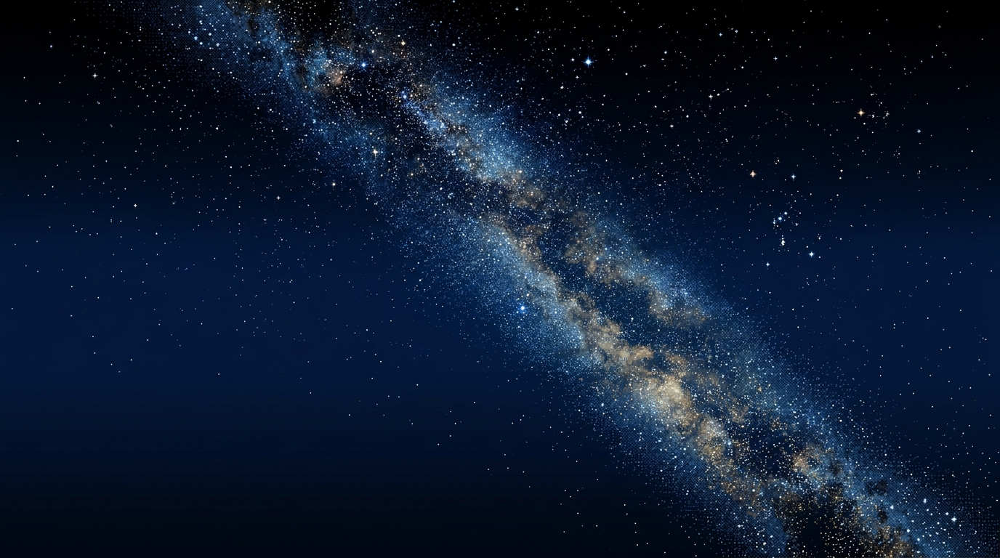

Cargando bosque…
Mira hacia donde quieres ir y mantén pulsado (botón / pantalla / Espacio) para caminar.
En computador también funciona WASD + mouse.

...
Mientras tanto se usa un color plano oscuro como placeholder.